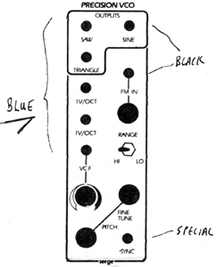
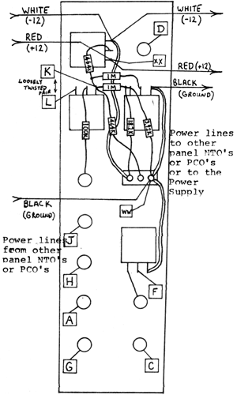

|

Precision VC OscillatorParts for Kit
 Like the NTO, the PCO has two sets of power suppy lines -for maximum stability. One set (red-white-black) is connected to the PC boards in the usual -fashion, and the other set (red-white-black) travels along the panel mounted components, as seen from the diagram. The two sets are Joined together (red+red; white+white, black+black) as near to the power supply as possible. If plugs and sockets are used. the Joining is done on the male plug from the panel. if a barrier strip is used, the two l ines are mated at the terminals of the strip. Further instructions are in the manual (appendix H). No matter how many NTO's and PCO's on a panel, there will always be two sets of power supply wires to connect the power supply to the panel. Power supply wiring on the panel should be done first. The wires should be routed neatly around pots and near to the panel. Make certain that no loose ends, wire strands, or bare wires have any possibility of touching other bare wires, terminals, or metal parts. Panel mounted resistors should use teflon tubing wherever there is a possibility of shorts. Check to verify that all outputs are the proper waveforms. This is easilly done by ear. The sine wave will be the purest wave with no overtones present. Triangle waves are slightly reedy. Sawtooth waves are rich in harmonics. The frequency range of the front knob should range from the low to the high end of the audible spectrum (about 16 to 16kHz). Voltage control will extend this range even further. The switch should extend the lower limit down to around .2 Hz. Check for proper control at the 1V/oct inputs and at the AUX input. The AUX knob will scale the effect of the applied input voltage from near zero effect to greater than 1V/oct in both the positive and negative direction. Check the SYNC input to verify that the PCO will lock into another oscillator's -frequency. This is best done with a sawtooth wave of about the same frequency applied to the SYNC input. If the frequencies are too far apart, the oscillator will not sync or the PCO may lock into sub-harmonics. Refer to the NTO user hints for adjustments on this module.
|